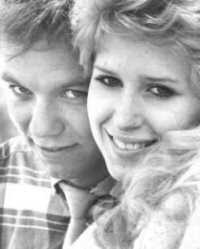
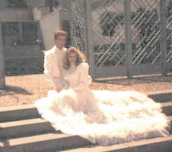
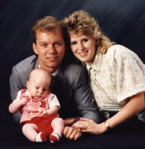
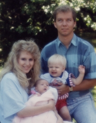
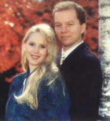
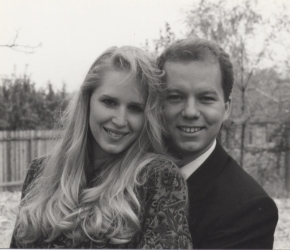
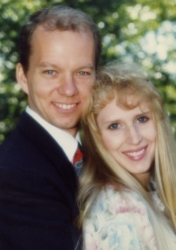
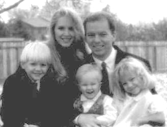
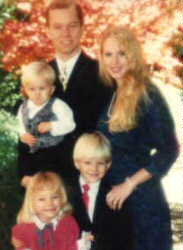
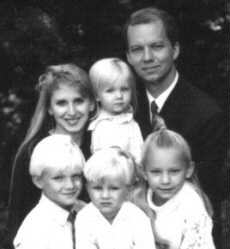
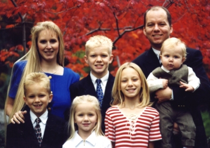
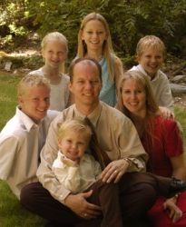
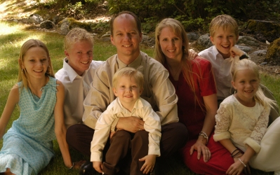
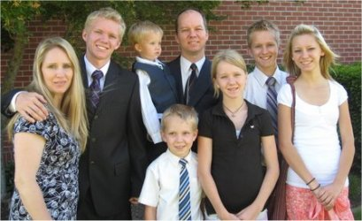
Mother's Memories:
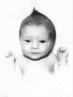After Bart was born and died, Dad and I decided that we wanted another son but I was in poor health so getting pregnant took longer than expected. When I finally became pregnant and was two months along I started having trouble and nearly lost the baby. I had to go to bed for months and have weekly shots up until the last month. I couldn't even watch TV or read, as I would go into labor from any strain at all. Finally in the last month or so the doctor said I was allowed to get up and move around as the baby was ready to be born. One night Dennis and I went to the Disneyland Hotel for dinner. I started labor during the meal and told Dennis I was having contractions every three minutes and that we needed to go the hospital. Dennis said we needed to remain to eat as we had ordered prime rib. I didn't feel like eating, as it tasted like raw meat to me, but we stayed. After dinner my labor stopped so we went home. But that night I woke up and knew we only had a short time till the birth. I insisted Dad cook me breakfast, but finally saw the labor was too advanced and dropped the idea. We hurried to the hospital where I wouldn't let Dad leave me at the front entry, but made him park the car in the big St Jude hospital parking lot. We could only walk a short distance toward the hospital before another hard contraction would hit. They were so bad I had to hold on to Dad. I wanted to have Dad with me in the labor room, as that was the new thing in LA, and didn't want us to be separated but when we went inside and they saw my condition they put me in a wheelchair and took me away. Dad got stuck filling out paperwork so I never saw him after going into the hospital.
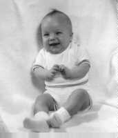After being checked in the labor room I was taken straight to the delivery room. They had me sign papers but my handwriting was all over the page as I was in the last stage of labor. My doctor was one of the best in LA, as I didn't want another problem like I had with Bart, but he hadn't arrived yet and I didn't have the urge to push, so I had what seemed like an hour of going through transition without painkillers till the doctor finally came. With the first push out came the 5' 6" cord (the longest my doctor had ever seen). I was put out and the doctor used forceps to bring Dane into the world.
After hours in my room, Dane was finally brought to me. Nursing wasn't in at the time, but I insisted upon nursing him. But no one taught me how so I had to figure it out on my own. They fed him bottles in the nursery as they didn't bring the babies to mothers at night to be fed. When I could I got up to see Dane in the nursery. He couldn't stop smiling over and over at everyone taking care of him. Later Dad came in and said he couldn't find Dane in the nursery. We found out that he was turning blue and they didn't know if he would make it. He was put into intensive care. Three days after Dane's birth, I was sent home without him. Before I left St Jude, I went to the nursery window and broke into tears, I thought we were going to lose our second son.
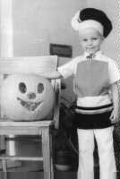We visited the hospital constantly to look through the window at Dane. Then one day I received the call of our life, Dane was okay and we could finally take him home. We decided Dane was a fighter. He had fought to stay alive in the womb and after his difficult birth and now, at almost 39 years old, we have seen him do amazing things. The doctor had said that because of his difficulties after birth that he may have motor skill problems and maybe even brain damage. But Dad gave him a blessing and he has been perfectly fine. He has been extra good at biking, snow skiing, hiking, water skiing, dancing, and more. Dane loves music and played the violin in school. His singing voice is outstanding and he has performed many times. He was the first boy in Oregon to become an Eagle Scout at age 13 (though he actually finished at 12). As a teenager he learned to fly and soloed at 16 years old. 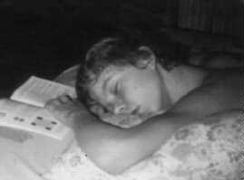 He went to Hawaii twice at age 12 with a friend of his from school. He won an Oregon State award in wood working in High School and went on to make a dining table, a hope chest and a beautiful turning mirror he and Karen still use in their home today. He went to Frankfurt, Germany to serve a two year mission for the Church at 19 years old. At 21 he shocked us all by climbing Mt. McLoughlin in the record time of three hours! He became a great welder for a number of years and welded thousands of tow truck dollies to perfection. He never had a dolly returned. While other welders could barely manage 4 sets a day, Dane could weld 11! Dane is an excellent craftsman and has always worked to perfection in everything he has done. He's helped build cabinets for kitchens, reconstructed mobile trailers for a hospital instrument repair business and is now installing kitchens interiors to perfection. In addition to this he handles money well, staying out of debt and always staying within his budget. His clothes, tools and belongings are all kept in perfect order. Dane has always been a great defender of the faith. He's held many positions in the church and served with perfection. He has helped countless families through his friendship and home teaching. Dane watches over everyone around him and fills their needs quietly. When it flooded in their town, Dane went around rescuing people by pumping out their homes with an electric pump without even being ask to help. When people need their garden tilled, Dane tills it when they are gone, so he won't draw attention to himself. When someone is building a home, Dane is there helping when they need it. When he lived by the freeway and a family with a broken down car knocked at the door, Dane put the family up in his home and fed them till their car was repaired days later. Dane is a friend to many.
Dane is honest, kind, a gentleman and, most of all, a dedicated family man. Dane knows and practices the principles of obedience and has great faith. When Dane was two years old he started praying for a baby sister. He prayed for over a year despite me telling him that I didn't think I could have another child. His prayer was answered with five sisters in a row! (See Memories of Melanie for details). Dane has a great sense of humor, he honors his parents and is best friends with his father. But his greatest achievement was to marry his sweet wife Karen in the Oakland Temple and become a father to their five beautiful children. He has always worked to be the best husband and father possible. Each evening Dane calls his family around him for scripture reading and family prayers. They are reading the Bible this year. He takes his family to church each and every Sunday. He talks and listens to his children, carefully teaching and correcting them. He truly believes in reasoning power with children. He takes his family on many exciting vacations and fun side trips all over.
Dane has worked hard to become rich in happiness, peace and knowledge. He keeps peace in his life by maintaining a balance of mental, spiritual, physical and emotional health and having a plan for living that brings joy for eternity. Dane has made staying in bed and hardly moving before his birth worth every minute to me. Thank you Dane for being the best you can be.